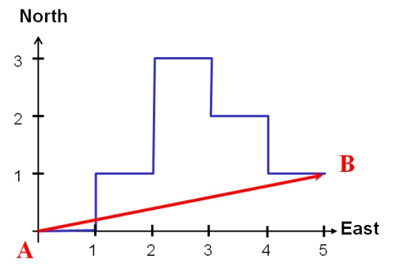
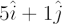

Displacement is a vector quantity measuring the change in location of a body from an initial to a final position. It is specified by a magnitude and a direction.
In the diagram on the right, a body has moved from point A (the origin) to point B. The displacement is the vector joining these two points, which can be written as 5 units east and 1 unit north or (5, 1) or

where and are unit vectors along the east and north axes respectively. The magnitude of the displacement between A and B is 5.099 units. Note that the displacement does not take into account the path followed between A and B. In this example, the body moved 10 units to get from A to B.